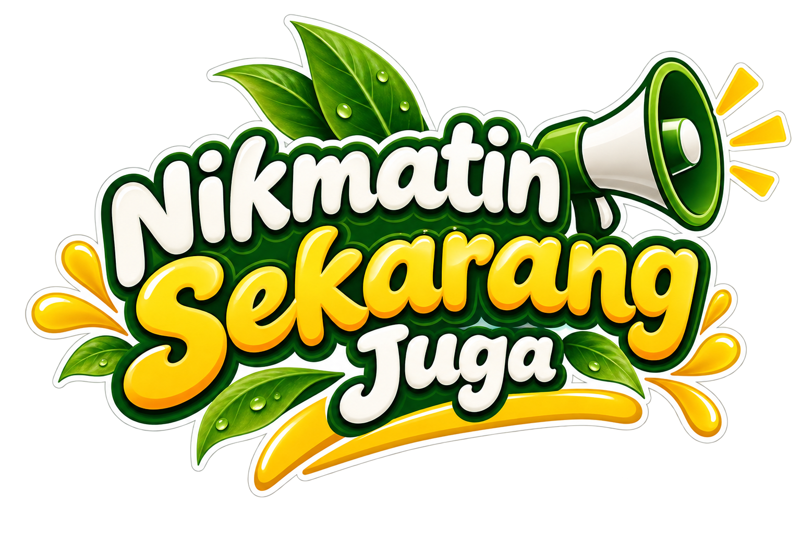
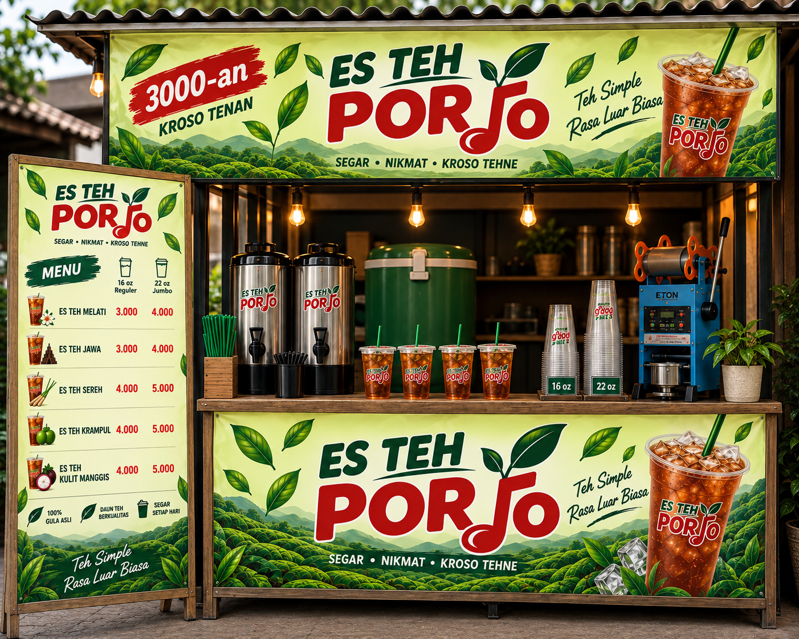
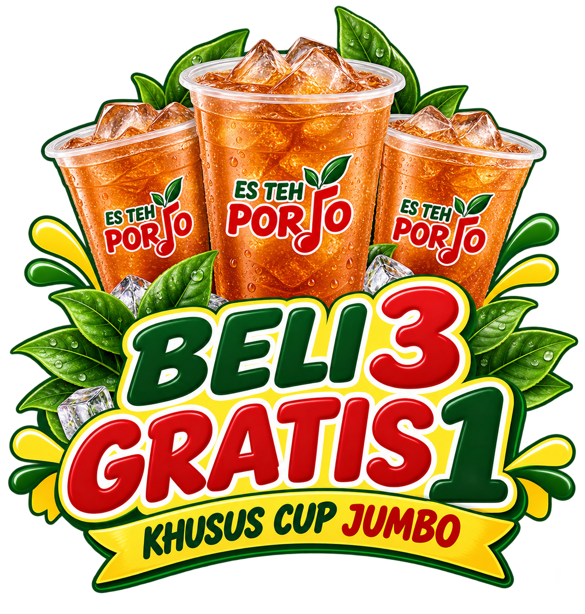
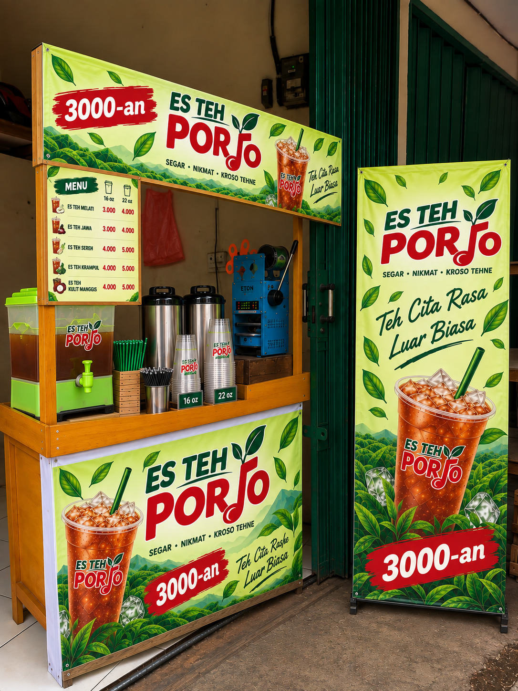

Es Teh, Minuman Favorit Orang Indonesia
Kenapa es teh begitu dekat dengan meja makan, warung, dan aktivitas sehari-hari di Indonesia?
Baca Artikel →Teh dingin yang dekat dengan keseharian masyarakat. Segar, nikmat, harga bersahabat, dan kroso tehnya.


Voucher dan program talent untuk pelanggan serta kreator lokal.

Halaman stand dibuat sebagai katalog outlet. Foto dan alamat asli tiap titik bisa langsung dipasang tanpa mengubah struktur desain.

FOTO STAND FOTO STAND
FOTO STAND
Listing publik yang ditemukan menunjukkan Es Teh Porjo di Sukamaju, Kec. Cilodong, Kota Depok, Jawa Barat 16415; belum dapat dipastikan ini titik Villa Pertiwi.
Cari di MapsPilih stand di atas untuk menuju pencarian Google Maps atau gunakan tombol di bawah untuk melihat seluruh titik.
Es Teh Porjo membawa minuman yang dekat dengan masyarakat menjadi brand yang rapi, hangat, modern, tetapi tetap punya rasa lokal.
Identitasnya sederhana: teh dingin, harga bersahabat, dan rasa yang bikin ingin mampir lagi.
“Segar • Nikmat • Kroso Tehne”Kenal Lebih Dekat →
Artikel ringan seputar teh, bahan alami, dan inspirasi minuman yang bisa menemani keseharian.
 01
01
Kenapa es teh begitu dekat dengan meja makan, warung, dan aktivitas sehari-hari di Indonesia?
Baca Artikel →
02
Mengenal kulit manggis, xanthone, warna alami, dan hal yang perlu diperhatikan saat mengolahnya menjadi minuman.
Baca Artikel →Eksplorasi rasa dari sereh, jeruk, jahe, kayu manis, dan daun mint tanpa harus membuat klaim kesehatan berlebihan.
Baca Artikel →Untuk menu, promo, stand, pemesanan, atau kerja sama.